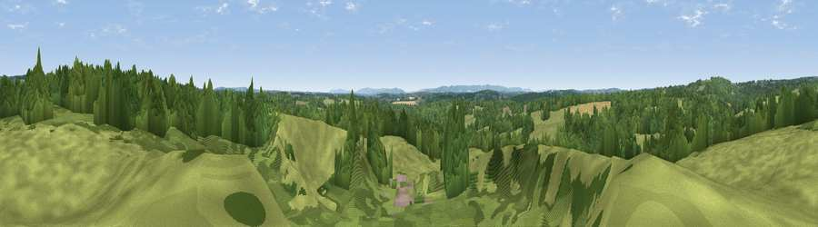

Viewpoint near Sheffield Park
#46208 in England · top 99% of its area beats it · near Sheffield ParkWhere it is
The exact computed spot (TQ 41476 24078). Click the marker for map links.
The view, rendered

A 360° render of this exact spot computed from the terrain model, tree cover and land cover — summer colours, afternoon light, calibrated against photographs of famous viewpoints. Real trees, hedges and buildings will differ in detail.
The panorama
Grey silhouette: terrain skyline in each direction (720 bearings, Earth curvature and refraction included). Dashed green: skyline with trees (+15 m) and buildings (+8 m) as obstacles. Blue strip: how far the ground is visible on each bearing.
Where the view opens
Wedge length = distance to the farthest visible ground on that bearing (vegetation-aware). Rings at 10, 25 and 50 km.
What fills the view
70% woodland · 19% grassland · 5% water · 4% cropland · 3% built-up
Angular shares of the visible panorama (visual magnitude), not map area. Landscape diversity 0.41 (0–1 Shannon).
Key numbers
More beautiful places nearby
The staircase of upgrades: each row has a higher view potential than everything closer. Driving times are estimates from straight-line distance, calibrated against real road routing — check an actual route before setting out.
| Place | Direction | Drive | Score |
|---|---|---|---|
| Viewpoint near Scaynes Hill | W · 3 km | ~6 min | 36.8 |
| Viewpoint near Danehill | NNW · 3 km | ~8 min | 45.5 |
| Viewpoint near South Chailey | SSW · 7 km | ~14 min | 47.4 |
| Viewpoint near Fairwarp | NE · 7 km | ~15 min | 54.3 |
| Viewpoint near Upper Hartfield | NE · 10 km | ~19 min | 59.6 |
| Viewpoint near Plumpton | SSW · 12 km | ~23 min | 80.4 |
| Viewpoint near Westmeston | SSW · 13 km | ~24 min | 80.9 |
| Ditchling Beacon | SW · 14 km | ~25 min | 81.8 |
50.99871, 0.01480 · source: osm viewpoint · position refined by local search. Computed location — check access rights before visiting.